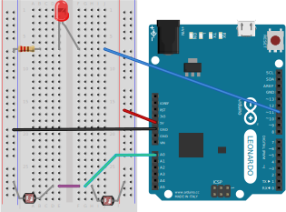

Now we have the circuit set up, lets try and do something useful with it. We can start really simple, and just use it like a dimmer switch. It will be up to you later on to make it do something more exciting!
Right, lets write the code! The example code is shown below, can you work out which lines do what? See if you can explain to yourself where we work out how fast the sensor value is changing.
 {% highlight C linenos %}
{% include_relative gradient/gradient.ino %}
{% endhighlight %}
{% highlight C linenos %}
{% include_relative gradient/gradient.ino %}
{% endhighlight %}

Again, upload the code, and have another look at the output of the serial plotter. What do you see?
Hopefully, you will see that if you move your finger across the two LDRs slowly that you can control the height of the blue plotter line? See if you can gradually move it up and down. If you move your finger slowly, the red line will not move. Now, if you quickly move your finger, you'll see the red line jump up and down very quickly. Can you remember why it jumps only if we move our finger quickly?
Now we can see how our code works, and that the circuit works too, lets extend it and make a little dimmer switch. You can copy the circuit below, and hopefully, when you finish it, the code will make the LED brighter or dimmer depending on how you move your finger over the sensor.

Now you've mastered that, let's move on to trying to do actual gestures!
< Previous | Home | Next >